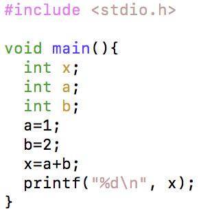

四則演算
Keisan1.c
まず、以下のソースコードを打ち込み、コンパイルをして実行しましょう。
コンパイルの方法は、以下を参考にしましょう。
参考資料 コンパイルと実行（Windows コマンドプロンプト）
参考資料 コンパイルと実行（Mac ターミナル）
Keisan1.c

実行すると、以下のような結果が表示されます。
実行結果
3
算術演算子
算術演算子には、以下のようなものがあります。
| 演算子 | 意味 | 使い方の例 | 結果 |
|---|---|---|---|
| + | 和 | 5+2 | 7 |
| - | 差 | 5-2 | 3 |
| * | 積 | 5*2 | 10 |
| / | 商 | 5/2 | 2 |
| % | 剰余 | 5%2 | 1 |
演算子には優先順位があります。基本的には、数学の優先順位と同じです。
参考資料 演算子の優先順位
変数と基本データ型
Keisan2.c
次に、以下のソースコードを打ち込み、コンパイルをして実行しましょう。
前のKeisan1.cを少し修正しただけです。
Keisan2.c

変数とは
プログラムで扱う値を入れておくための 箱 だと考えればよいでしょう。
変数宣言
変数を使うためには、変数宣言 をする必要があります。
変数宣言
データ型 変数名;
例えば、上のプログラムの3行目が変数宣言です。
変数宣言の例（１）
int x;
さらに、以下のように宣言と同時に初期値を入力することもできます。
変数宣言の例（２）
int x=3;
変数宣言は、プログラムの任意の場所で行えますが、特にプログラム全般で使う変数は先頭にまとめるほうが良いでしょう。
また、変数名は基本的には自由につけることができますが、予約語 と呼ばれる単語は使用することができません。
参考資料 C言語における予約語
代入
5行目の x=3; の = は、値の代入をせよという意味です。記号は同じでも、数学でいう 等号 とは意味が少し違います。
きちんと言い換えるならば、左辺の変数に右辺の値を代入 せよ、という意味です。

基本データ型
上の例では、整数型 int を使いました。Cではこの他にも様々なデータ型を扱うことができます。
| 型 | サイズ | 内容 | 値の範囲 |
|---|---|---|---|
| char | 1 byte | 文字型 | 0 ～ 255 |
| short | 2 byte | 整数型 | -32768 ～ +32767 |
| int | 2 byte | 整数型 | -32768 ～ +32767 |
| long | 4 byte | 整数型 | -2147483648 ～ +2147483647 |
| float | 4 byte | 浮動小数点型 | 1.17549e-38 ～ 3.40282e+38 |
| double | 8 byte | 浮動小数点型 | 2.22507e-308 ～ 1.79769e+308 |
浮動小数点型の e は、（e以前の数）×10の（e以降の数）乗 という意味です。
様々な変数の使い方
Keisan3.c
次に、以下のソースコードを打ち込み、コンパイルをして実行しましょう。
Keisan3.c

9行目を見てみましょう。このように、代入するものは 数式 でも使えます。
正確には、変数xに 数式の計算結果の値 を代入することになります。
複数の変数を使う
さらに、以下のように修正してみましょう。
Keisan3.c

このように、右辺に 変数 もしくは 変数の入った数式 でも代入できます。
練習問題
上の CalcSample3.c を参考にして、他の演算を行うプログラムを作成してみましょう。
その際、値もいろいろ変えて試してみましょう。